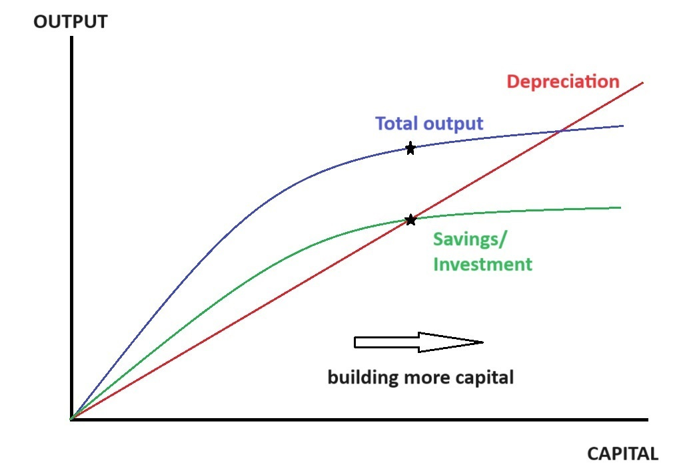

6 Solow Model
Smith
The amazing thing about the Solow model is that it does tell us a few incredibly important things about growth. As I see it, the two key lessons are:
Eventually, building more physical capital stops making your economy grow.
It’s possible to build so much physical capital that you make your people poor.
The Solow model assumes that economic output — also called “production” or “GDP” — comes from three things:
Labor (human work effort)
Physical capital (machines, buildings, vehicles, etc.)
A mysterious quantity called “total factor productivity” (TFP), usually abbreviated as “A”, which some people associate with technology
The Solow model deals mostly with the question of how physical capital affects growth.
Solow’s model makes three very reasonable assumptions about how physical capital works. It assumes:
You can build more physical capital by saving and investing.
Physical capital depreciates over time (at a constant rate).
On its own, physical capital has diminishing returns.
The first of these assumptions is actually the most subtle. The basic intuition is that you can set aside a certain amount of your GDP every year to build physical capital — like a farmer choosing to reserve a certain percentage of the annual corn harvest as seed corn for planting next year’s crop. But most real types of physical capital don’t work like seed corn — a sewing machine can’t be used to create new sewing machines, etc. So what Solow is actually assuming is that we set aside a certain percent of our financial income and use it to pay people to build more capital. It basically assumes a market where sewing machines, and any kind of capital, can be constructed for a price.
Suppose we hold the number of workers constant. In that case, the relationship between physical capital and economic output looks like this:

The red line is straight because depreciation just depends on how much capital you have. If you have 10 times as much capital, then 10 times is much is depreciating every year.
The blue line is how much gets produced. As I said before, when the number of people is fixed, building more physical capital has diminishing returns. That’s why the curve is concave — each piece of capital you add gives you a little less additional output than the previous one.
The green line is how much production goes into building new capital. The Solow model assumes that a country saves and invests a constant fraction of its output. So the green line is just the fraction of output that gets invested — i.e, the fraction that gets plowed back into either building new capital or maintaining old capital. This has diminishing returns too, since investment has to come from output. That’s why the green line is curved like the blue line.
So what does this tell us about how economies grow? It tells us one incredibly important thing. It tells us that because of depreciation and diminishing returns, a country simplycan’t build its way to infinitely high standards of living. If you just keep trying to build more and more, at some point depreciation overwhelms you. and you just can’t build any more!
Over the last four decades, China has built an absolutely incredible amount of physical capital — in absolute terms, the most any country has ever built in history. The Solow model gives a simple explanation for how China was able to build this much, this fast: It had a very high rate of savings and investment, far higher even than other Asian countries.
China dedicated everything it had to building massive amounts of physical capital, leaving relatively little of its economic output left over for its people’s consumption. As a result, it grew very very quickly. This type of growth has a limit. Just as the model would predict, China started hitting diminishing returns. We started seeing “ghost cities” and massive overcapacity in all sorts of industrial sectors. China’s incremental capital-output ratio — the dollars of capital needed in order to generate an additional dollar of GDP — rose relentlessly from around 2007.
On top of that, there’s depreciation to deal with. When you build that many apartment towers and highways and office buildings, you’re eventually going to have to maintain them. This is especially true of China, which tends to build things using cheap materials that don’t last very long. And when you build that many machine tools and vehicles, you’re going to have to work very hard just to replace them all as they age.
China is already probably struggling with capital depreciation. But it’s likely that the Solow model’s assumption of a constant rate of depreciation is only true in the long run, and that in the early days of a country’s building spree it’s not that much of a problem — you have to wait 20 or 30 years for all that shiny new stuff to start falling apart. So the depreciation of the massive capital stock China has built since the 1990s will probably be a bigger drag on growth in the years to come.
Slowing growth from physical capital accumulation is the Solow model’s first big insight. The second is that it’s actually possible for a country to save and invest so much of its income, and build so much physical capital, that it actually makes its citizens poorer. The more you build, the more you have to pay to upkeep in the future. There’s a point called the “golden rule”, above which saving and investing more of your national income just forces your citizens to forego more and more consumption in order to stave off capital depreciation.
In the Solow model, the optimal savings rate is lower if population growth is lower. China’s population is now shrinking, and its working-age population is falling rapidly. So the Solow model serves as a warning to China’s leaders that they should consider encouraging their people to consume more.
So even though it’s a simplistic theory — almost a toy model, really — the Solow model can tell us a lot about the biggest and most important economic growth story of modern history. The basic lesson is that the usefulness of building sprees like China’s has a sell-by date. Eventually, physical capital accumulation stops being able to grow your economy, and can even backfire by reducing living standards. It’s a lesson China’s leaders, and companies considering investing in China, would do well to heed.
TFP
Of course, there is a vast amount that the Solow model can’t tell us about economic growth. Most of those unanswered questions are contained in that innocuous little letter “A”; as one of Solow’s contemporaries put it, total factor productivity is a measure of our ignorance. One factor exacerbating China’s growth slowdown is that TFP growth has slowed relentlessly over the last three decades
As of right now, China’s income is less than a third of the U.S.’ If China’s growth slows down to developed-country levels while only reaching 1/3 of rich-world living standards, it will represent a major failure for the country’s economic system.